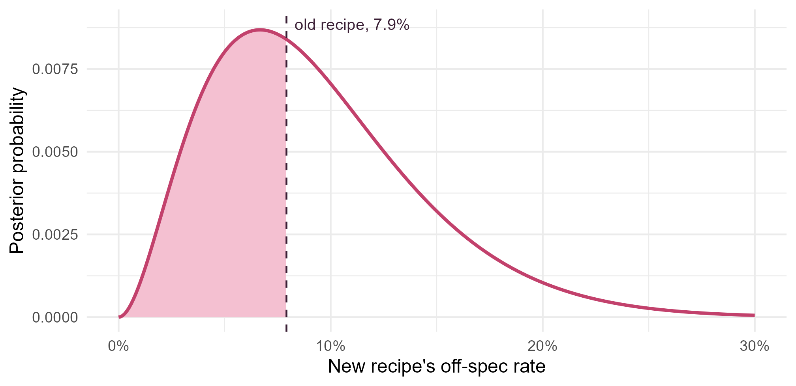

Module 5 · Lesson 1 of 13 Week 76 of 160 About 5–7 hours
Bayesian thinking
Probability as a measure of what you know
Use Bayes’ theorem to find out what an analyzer alarm really means. Then meet the three parts of every Bayesian analysis, the prior, the likelihood and the posterior, on a trial of a new recipe: first with three possible off-spec rates, then with every rate from 0 to 1 on a grid. Change the prior, update as batches arrive, and predict the next ten batches.
The plant has a new recipe. It runs the reaction 15 °C cooler, which saves steam, and the development team thinks it also makes fewer off-spec batches. The old recipe ran off spec in 38 of its last 480 batches, 7.9%. The new one has now been trialled on 30 batches, and 2 were off spec, 6.7%.
So is the new recipe better? A classical test says: with only 30 batches, you can’t tell. Its 95% confidence interval for the off-spec rate runs from 0.8% to 22%, and the plant manager can’t do much with that. What she’d like is an answer to the question she actually has: how probable is it that the new recipe is better?
That’s a question about the probability of a parameter, and classical statistics doesn’t allow it: the rate is a fixed number, not a random one. Bayesian statistics does. It uses probability for anything you’re uncertain about, including parameters. You saw the machinery in Module 4: the posterior distribution, sampled by MCMC. This module is about the ideas behind it, and how to use them well.
Welcome to Module 5! Here, probability isn’t only about coins and dice. It’s about what you know, and how much you should change your mind when the data come in. My kind of statistics!
In this lesson you’ll:
- use Bayes’ theorem to update a probability with evidence
- meet the prior, the likelihood and the posterior
- compute a posterior distribution on a grid
- see how the prior changes the answer
- update the posterior as the data arrive
- predict future batches from the posterior
Probability as uncertainty
There are two ways to read “the probability is 30%”. The frequentist reading is about repetition: in a long run of identical trials, 30% would turn out that way. The Bayesian reading is about knowledge: given what you know, you’d bet on it at odds of 30 to 70. The second reading works even for one-off things, like “the new recipe’s off-spec rate is below 7.9%”, which isn’t a repeatable trial at all.
The rule for updating knowledge is Bayes’ theorem. For a hypothesis H and evidence E,
P(H \mid E) = \frac{P(E \mid H)\, P(H)}{P(E)}, \qquad P(E) = P(E \mid H)\,P(H) + P(E \mid \text{not } H)\,P(\text{not } H).
Here’s a classic case. An online analyzer watches the product for a contaminant. About 2% of batches are contaminated. The analyzer catches 95% of them (its sensitivity), and it raises a false alarm on 5% of clean batches.
Your turn. The alarm goes off. What’s the probability that the batch is really contaminated?
The second part of the denominator is P(\text{alarm} \mid \text{clean})\,P(\text{clean}), so it uses false_alarm.
prior <- 0.02 # P(contaminated)
sens <- 0.95 # P(alarm | contaminated)
false_alarm <- 0.05 # P(alarm | clean)
prior * sens / (prior * sens + (1 - prior) * false_alarm)Only 28%. Most alarms are false, because clean batches are so much more common: out of 1,000 batches, 19 are contaminated and caught, but 49 clean ones also raise the alarm. The 2% you knew before the alarm, the prior probability, matters as much as the analyzer’s accuracy. People who ignore it make the base-rate fallacy, and it’s one of the most common mistakes in reasoning about evidence.
Your turn. The plant adds a second, independent analyzer with the same accuracy. Both alarm. Now what’s the probability? (With independent analyzers, the chance of two alarms is the product of the chances.)
Two false alarms happen with probability false_alarm^2.
prior <- 0.02
sens <- 0.95
false_alarm <- 0.05
prior * sens^2 / (prior * sens^2 + (1 - prior) * false_alarm^2)88%. You’d get the same answer by updating twice: the 28% after the first alarm becomes the prior for the second. Yesterday’s posterior is today’s prior. That’s how Bayesian learning works, and you’ll see it again with the recipe.
Prior, likelihood and posterior
Now the recipe. The unknown is \theta, the new recipe’s off-spec rate. Every Bayesian analysis has three parts:
- The prior p(\theta): what you believed about \theta before the trial.
- The likelihood p(\text{data} \mid \theta): how probable the data are for each value of \theta. For 2 off-spec batches out of 30, it’s the binomial probability,
dbinom(2, 30, theta). - The posterior p(\theta \mid \text{data}): what you believe afterwards. By Bayes’ theorem, it’s proportional to the prior times the likelihood.
p(\theta \mid \text{data}) \;\propto\; p(\text{data} \mid \theta)\; p(\theta)
To start simply, suppose the development team had narrowed it to three possibilities: the new recipe’s rate is 3% (much better), 8% (the same as the old one) or 15% (worse), and they thought each equally likely.
Your turn. Find the posterior probability of each.
Divide by the sum of prior * lik, so that the posterior probabilities add up to 1.
theta <- c(0.03, 0.08, 0.15)
prior <- c(1, 1, 1) / 3
lik <- dbinom(2, 30, theta) # P(2 off spec out of 30 | theta)
prior * lik / sum(prior * lik)31% for “much better”, 50% for “the same” and 19% for “worse”. The trial moved the team’s beliefs, but not far: 30 batches is a small trial. The sum in the denominator is P(\text{data}), the same for all three hypotheses. Its only job is to make the posterior add up to 1.
Grid approximation
Of course, the rate isn’t limited to three values. It could be anything from 0 to 1. The simplest way to handle that is a grid: try 1,001 values, \theta = 0, 0.001, 0.002, \ldots, 1, and do exactly what you did for three. With a flat prior, every rate equally plausible, the posterior is the likelihood, scaled to sum to 1.
Your turn. The setup code has the grid. Compute the posterior on it, then its mean and its mode, the most probable value.
Same as before: divide by sum(prior * lik).
prior <- rep(1, length(grid)) # flat
lik <- dbinom(sum(trial$off_spec), nrow(trial), grid)
post <- prior * lik / sum(prior * lik)
c(mean = sum(grid * post), mode = grid[which.max(post)])The most probable rate is 6.7%, the trial’s own rate, 2 out of 30. The posterior mean is higher, 9.4%, because the posterior has a long right tail: rates of 15% or 20% are still possible after only 30 batches, but rates below 0 aren’t. With a flat prior, the mode is always the maximum likelihood estimate.
Here’s the posterior. With a flat prior, it has the same shape as the likelihood:
ggplot(data.frame(theta = grid, post = post)[grid <= 0.3, ], aes(x = theta, y = post)) +
geom_area(data = function(d) d[d$theta < 38 / 480, ], fill = "#F4C0D1") +
geom_line(color = "#C2416C", linewidth = 1) +
geom_vline(xintercept = 38 / 480, linetype = "dashed", color = "#3A1F35") +
annotate("text", x = 0.083, y = max(post) * 1.02, label = "old recipe, 7.9%", hjust = 0, size = 3.6, color = "#3A1F35") +
scale_x_continuous(labels = scales::percent) +
labs(x = "New recipe's off-spec rate", y = "Posterior probability") +
theme_minimal(base_size = 12)
The shaded area is the probability that the new recipe is better than the old one.
Your turn. Compute it: add up the posterior probabilities of all the rates below the old recipe’s, 38/480.
The old recipe’s rate is 38 / 480.
lik <- dbinom(sum(trial$off_spec), nrow(trial), grid)
post <- lik / sum(lik) # the flat-prior posterior
sum(post[grid < 38 / 480])45%. That’s the direct answer to the plant manager’s question: given this trial and a flat prior, there’s a 45% probability that the new recipe makes fewer off-spec batches than the old one. It’s a coin toss. A good outcome from 30 batches, but not yet evidence of an improvement. (For now, we treat the old rate as known exactly. Challenge 2 drops that.)
The prior matters
A flat prior says that an off-spec rate of 90% was as plausible as 5% before the trial. Nobody at the plant believed that. The development team’s lab work suggested the new recipe would run off spec about 5% of the time, perhaps less, rarely more than 15%. One way to write that down is an exponential prior with mean 5%: highest at 0, and falling away smoothly.
Your turn. Use the prior dexp(grid, rate = 20) (an exponential with mean 1/20 = 5%), and recompute the posterior mean and the probability of an improvement.
The posterior is proportional to prior * lik.
prior <- dexp(grid, rate = 20)
lik <- dbinom(sum(trial$off_spec), nrow(trial), grid)
post <- prior * lik / sum(prior * lik)
c(mean = sum(grid * post), p_better = sum(post[grid < 38 / 480]))With the team’s prior, the posterior mean is 5.9%, and the probability of an improvement is 76%. The same 30 batches, a different conclusion, because the team brought in what it knew from the lab. Is that cheating? Not if the prior is stated openly, was set before the data came in, and is backed by real knowledge. But a skeptical plant manager could reasonably say the lab results were optimistic. Lesson 3 is about choosing priors, and about checking how much the conclusions depend on them.
Updating as the data arrive
The trial didn’t happen all at once. The first 15 batches ran in March, with 1 off spec, and the second 15 in April, with another 1. Suppose the team had computed the posterior after March. In April, that posterior is the prior.
Your turn. Update the flat prior with the first 15 batches, then update that posterior with the second 15. Compare the result with the posterior from all 30 at once.
April’s prior is post_march.
march <- trial$off_spec[1:15]
april <- trial$off_spec[16:30]
post_march <- dbinom(sum(march), 15, grid) # flat prior times the likelihood
post_march <- post_march / sum(post_march)
post_april <- post_march * dbinom(sum(april), 15, grid) # March's posterior is April's prior
post_april <- post_april / sum(post_april)
post_all <- dbinom(2, 30, grid) / sum(dbinom(2, 30, grid))
c(mean_after_march = sum(grid * post_march), biggest_difference = max(abs(post_april - post_all)))After March, the posterior mean was 11.8%. After April, the posterior is the same as the one from all 30 batches at once, to 17 decimal places. It makes no difference whether you learn in one step or in two, or batch by batch. That’s a property classical tests don’t have: a Bayesian analysis can be updated whenever new data arrive, without any penalty for “peeking”.
Predicting the next batches
The posterior also predicts. The probability that the next batch is off spec is the off-spec rate averaged over the posterior, \sum_\theta \theta\, p(\theta \mid \text{data}): the posterior mean. The probability that the next 10 batches are all on spec averages (1 - \theta)^{10} in the same way. This is the posterior predictive distribution, and it carries all the uncertainty about \theta into the prediction.
Your turn. With the flat-prior posterior, find both probabilities.
Ten batches in a row on spec: (1 - grid)^10.
post <- dbinom(2, 30, grid) / sum(dbinom(2, 30, grid))
c(next_off_spec = sum(grid * post), next_10_on_spec = sum(post * (1 - grid)^10))A 9.4% chance that the next batch is off spec, and a 42% chance that the next 10 are all fine. If you’d plugged in the single best estimate, 6.7%, you’d have said (1 - 0.067)^{10} = 50\%: too confident, because it ignores the chance that the true rate is higher. Prediction intervals in Module 2 allowed for the same thing.
Challenge round
Challenge 1 · Draws from a grid. Most of this module works with posterior draws, as Module 4 did. You can get them from a grid too: sample grid values with the posterior probabilities as weights. Draw 10,000, and use them for the posterior mean and a 95% credible interval, the middle 95% of the draws.
The weights are the posterior probabilities, post.
post <- dbinom(2, 30, grid) / sum(dbinom(2, 30, grid))
set.seed(5011)
draws <- sample(grid, 10000, replace = TRUE, prob = post)
c(mean = mean(draws), quantile(draws, c(0.025, 0.975)))A mean of 9.4%, as before, and a 95% credible interval from 2.1% to 21.6%: given the trial and a flat prior, there’s a 95% probability that the new recipe’s off-spec rate is in that range. From draws, any summary is one line of R.
Challenge 2 · The old recipe was uncertain too. The old recipe’s 7.9% came from 480 batches, so it isn’t known exactly either. Give it its own flat-prior posterior on the grid, draw 10,000 values from each posterior, and find the probability that the new rate is below the old one.
The old recipe’s draws come from post_old.
post_new <- dbinom(2, 30, grid) / sum(dbinom(2, 30, grid))
post_old <- dbinom(38, 480, grid) / sum(dbinom(38, 480, grid))
set.seed(5012)
new <- sample(grid, 10000, replace = TRUE, prob = post_new)
old <- sample(grid, 10000, replace = TRUE, prob = post_old)
c(p_new_better = mean(new < old), quantile(old, c(0.025, 0.975)))46%, almost the same as the 45% before. The old rate’s 95% credible interval is narrow, 5.9% to 10.7%, so its uncertainty hardly matters next to the new recipe’s. That’s the usual pattern: the smaller study dominates the uncertainty in a comparison. To learn more, the plant needs more batches of the new recipe.
Quick quiz
1. In the Bayesian view, what does “a 76% probability that the new recipe is better” describe?
Bayesian probability describes uncertainty about anything, including one-off claims about parameters.
2. A test for a rare condition (1 in 1,000) is 99% accurate both ways. Someone tests positive. What’s the probability that they have the condition?
Out of 100,000 people, 99 of the 100 with the condition test positive, but so do 999 of the 99,900 without it. So 99/(99 + 999) = 9\%. That’s the base-rate fallacy again.
3. What is the posterior proportional to?
p(\theta \mid \text{data}) \propto p(\text{data} \mid \theta)\, p(\theta). The constant of proportionality, 1/p(\text{data}), just makes it sum to 1.
4. With a flat prior, what is the mode of the posterior?
A flat prior makes the posterior proportional to the likelihood, so they peak at the same place.
5. You analyze March’s data, then use the posterior as the prior for April’s. How does the result compare with analyzing March and April together?
Multiplying by March’s likelihood and then by April’s is the same as multiplying by both at once.
6. Why is the posterior predictive probability that the next 10 batches are on spec (42%) lower than (1 - 0.067)^{10} = 50\%?
Plugging in a single estimate ignores the uncertainty in it, and predictions made that way are too confident.
Wrap-up
You’ve done your first Bayesian analyses. Here’s what you’ve learned:
- Probability as uncertainty: Bayesian probability measures what you know, so it can describe parameters and one-off claims.
- Bayes’ theorem: a 95%-sensitive analyzer’s alarm means only a 28% chance of contamination when the base rate is 2%. Two alarms make it 88%.
- Prior × likelihood ∝ posterior: the posterior is the prior, reweighted by how well each value of the parameter explains the data.
- Grid approximation: with a flat prior, the new recipe’s off-spec rate has a posterior mean of 9.4% and a 45% probability of being below the old recipe’s 7.9%. With the team’s prior, it’s 76%.
- Updating: analyzing the data in two steps gives exactly the same posterior as one.
- Prediction: the posterior predictive probability that the next 10 batches are all on spec is 42%, not the 50% a plug-in estimate gives.
TipPractice in RStudio (optional, about an hour)
Download recipe_trial.csv into your project’s data-raw/ folder.
- Watch the posterior learn. Compute the flat-prior posterior after 5, 10, 15, …, 30 batches, and plot them all on one chart, with a color for each. How does the posterior change shape as the data come in?
- A coarser grid. Repeat the grid analysis with steps of 0.05 instead of 0.001. How much do the posterior mean and the probability of an improvement change? How coarse can the grid be before the answers are wrong in the second digit?
- Two parameters on a grid. Suppose 40 temperature readings are normal with an unknown mean and SD. Make a grid of 200 means by 200 SDs with
expand.grid(), compute the log-likelihood at each point, and plot the posterior withgeom_raster(). A grid with k points per parameter has k^d points in d dimensions. How many would a model with 10 parameters need? - Your own base-rate problem. Find a real case at work, or in the news, where a test or an alarm has a low base rate. What’s the probability that a positive result is real?
NoteKey words from this lesson
- Bayesian probability
- Probability as a degree of belief, given what you know. It can describe parameters and one-off events.
- Bayes’ theorem
- P(H \mid E) = P(E \mid H)\,P(H)/P(E): how to update the probability of a hypothesis with evidence.
- Base-rate fallacy
- Ignoring the prior probability when interpreting evidence, for example taking an alarm from an accurate analyzer at face value when the condition is rare.
- Prior distribution
- What you believe about a parameter before seeing the data.
- Likelihood
- The probability of the observed data for each value of the parameter.
- Posterior distribution
- What you believe about the parameter after seeing the data, proportional to the prior times the likelihood.
- Grid approximation
- Computing the posterior at a grid of parameter values, and normalizing it to sum to 1.
- Posterior predictive distribution
- The distribution of future data, averaged over the posterior uncertainty in the parameters.
NoteWant to read more?
- Alicia Johnson, Miles Ott and Mine Dogucu, Bayes Rules!, chapters 1, “The big (Bayesian) picture” and 2, “Bayes’ rule”. The friendliest introduction there is, with R. Free online.
- Richard McElreath, Statistical Rethinking lectures. Lecture 2, “The Garden of Forking Data”, builds grid approximation from counting, with globe tossing instead of batches.
- Andrew Gelman and others, Bayesian Data Analysis (3rd edition), chapter 1. The graduate reference for this module, free as a PDF on the book’s site. Section 1.5 is about the meaning of probability.